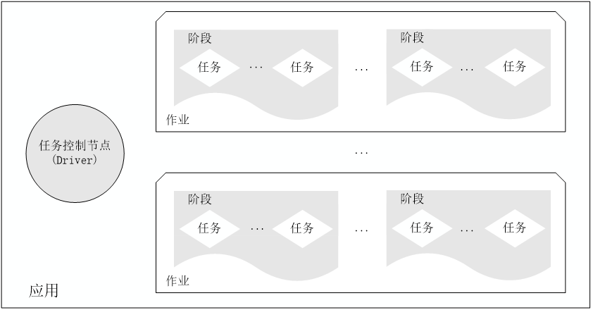
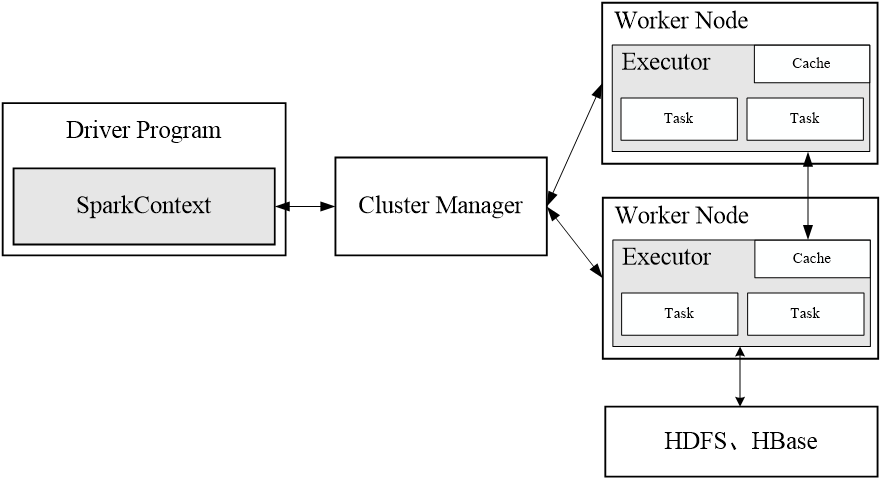
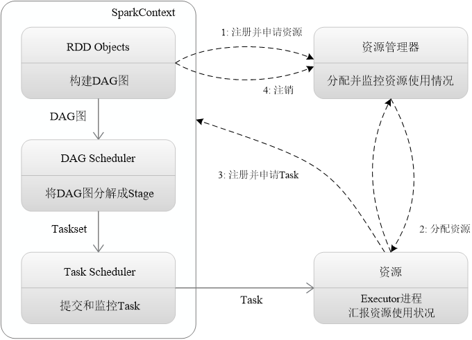
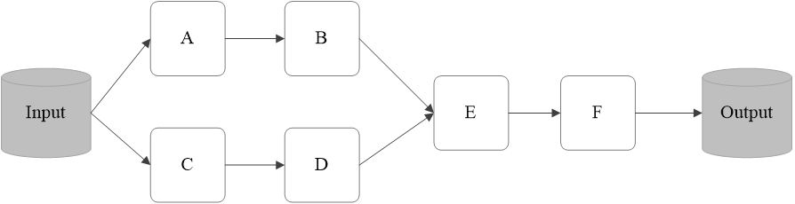

Spark学习（二）——RDD及RDD编程
RDD及RDD编程
一、RDD简介
1.1RDD简单介绍
- RDD: Resillient Distributed Dataset（弹性分布式数据集）的简称，是分布式内存的一个抽象概念，提供了一种高度受限的共享内存模型
- 一个RDD就是一个分布式对象集合，本质上是一个只读的分区记录集合，每个RDD可分成多个分区，每个分区就是一个数据集片段，并且一个RDD的不同分区可以被保存到集群中不同的节点上，从而可以在集群中的不同节点上进行并行计算
- RDD提供了一种高度受限的共享内存模型，即RDD是只读的记录分区的集合，不能直接修改，只能基于稳定的物理存储中的数据集创建RDD，或者通过在其他RDD上执行确定的转换操作（如map、join和group by）而创建得到新的RDD
- RDD提供了一组丰富的操作以支持常见的数据运算，分为“动作”（Action）和“转换”（Transformation）两种类型
RDD提供的转换接口都非常简单，都是类似map、filter、groupBy、join等粗粒度的数据转换操作，而不是针对某个数据项的细粒度修改（不适合网页爬虫） - Spark提供了RDD的API，程序员可以通过调用API实现对RDD的各种操作
- DAG：是Directed Acyclic Graph（有向无环图）的简称，反映RDD之间的依赖关系
- Executor：是运行在工作节点（WorkerNode）的一个进程，负责运行Task
- 应用（Application）：用户编写的Spark应用程序
- 任务（ Task ）：运行在Executor上的工作单元
- 作业（ Job ）：一个作业包含多个RDD及作用于相应RDD上的各种操作
- 阶段（ Stage ）：是作业的基本调度单位，一个作业会分为多组任务，每组任务被称为阶段，或者也被称为任务集合，代表了一组关联的、相互之间没有Shuffle依赖关系的任务组成的任务集
一个应用由一个Driver和若干个作业构成，一个作业由多个阶段构成，一个阶段由多个没有Shuffle关系的任务组成
当执行一个应用时，Driver会向集群管理器申请资源，启动Executor，并向Executor发送应用程序代码和文件，然后在Executor上执行任务，运行结束后，执行结果会返回给Driver，或者写到HDFS或者其他数据库中

Spark运行架构包括集群资源管理器（Cluster Manager）、运行作业任务的工作节点（Worker Node）、每个应用的任务控制节点（Driver）和每个工作节点上负责具体任务的执行进程（Executor）
资源管理器可以自带或Mesos或YARN

（1）首先为应用构建起基本的运行环境，即由Driver创建一个SparkContext，进行资源的申请、任务的分配和监控
（2）资源管理器为Executor分配资源，并启动Executor进程
（3）SparkContext根据RDD的依赖关系构建DAG图，DAG图提交给DAGScheduler解析成Stage，然后把一个个TaskSet提交给底层调度器TaskScheduler处理；Executor向SparkContext申请Task，Task Scheduler将Task发放给Executor运行，并提供应用程序代码
（4）Task在Executor上运行，把执行结果反馈给TaskScheduler，然后反馈给DAGScheduler，运行完毕后写入数据并释放所有资源

1.2RDD执行过程
RDD典型的执行过程如下：
- RDD读入外部数据源进行创建
- RDD经过一系列的转换（Transformation）操作，每一次都会产生不同的RDD，供给下一个转换操作使用
- 最后一个RDD经过“动作”操作进行转换，并输出到外部数据源
这一系列处理称为一个Lineage（血缘关系），即DAG拓扑排序的结果
优点：惰性调用、管道化、避免同步等待、不需要保存中间结果、每次操作变得简单

1.3RDD特性
（1）高效的容错机制
（2）中间结果持久化到内存，数据在内存中的多个RDD操作之间进行传递，避免了不必要的读写磁盘开销
（3）存放的数据可以是Java对象，避免了不必要的对象序列化和反序列化
二、RDD处理流程
2.1转换算子
RDD处理过程中的“转换”操作主要用于根据已有RDD创建新的RDD，每一次通过Transformation算子计算后都会返回一个新RDD，供给下一个转换算子使用。下面，通过一张表来列举一些常用转换算子操作的API，具体如下。
| 转换算子 | 相关说明 |
|---|---|
| filter(func) | 筛选出满足函数func的元素，并返回一个新的数据集 |
| map(func) | 将每个元素传递到函数func中，返回的结果是一个新的数据集 |
| flatMap(func) | 与map()相似，但是每个输入的元素都可以映射到0或者多个输出结果 |
| groupByKey() | 应用于（Key，Value）键值对的数据集时，返回一个新的（Key，Iterable |
| reduceByKey(func) | 应用于（Key，Value）键值对的数据集时，返回一个新的（Key，Value）形式的数据集。其中，每个Value值是将每个Key键传递到函数func中进行聚合后的结果 |
2.2行动算子
行动算子主要是将在数据集上运行计算后的数值返回到驱动程序，从而触发真正的计算。下面，通过一张表来列举一些常用行动算子操作的API，具体如下。
| 转换算子 | 相关说明 |
|---|---|
| count() | 返回数据集中的元素个数 |
| first() | 返回数组的第一个元素 |
| take(n) | 以数组的形式返回数组集中的前n个元素 |
| reduce(func) | 通过函数func（输入两个参数并返回一个值）聚合数据集中的元素 |
| collect() | 以数组的形式返回数据集中的所有元素 |
| foreach(func) | 将数据集中的每个元素传递到函数func中运行 |